Calitate, siguranță și valoare în recuperare
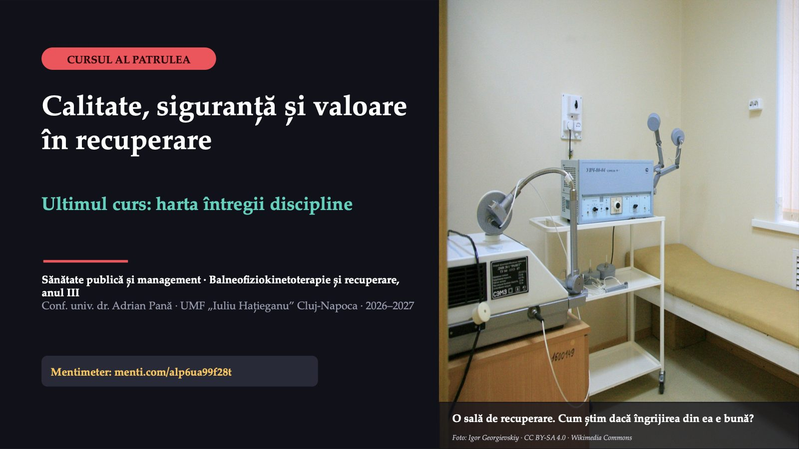
1 / 25Astăzi închidem disciplina cu o întrebare simplă: îngrijirea primită de un pacient a fost bună, sigură și a meritat ce a costat? Codul Mentimeter rămâne același toată ședința.
Trei cuvinte în titlu, trei întrebări pe același caz
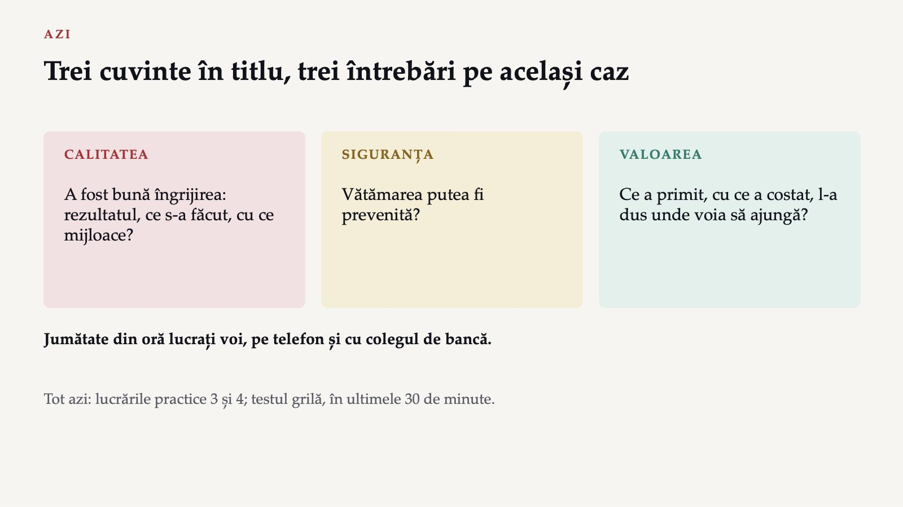
2 / 25Titlul cursului are trei cuvinte, iar cazul de azi le conține pe toate. Testul grilă acoperă și acest curs.
Domnul E.: o cădere în a cincea noapte
 3 / 25
3 / 25Radiografia nu arată o fractură nouă, dar domnul E. are o contuzie mare la șold și, de a doua zi, refuză să mai meargă fără să fie ținut de mână. Ședințele de recuperare se scurtează, iar externarea se amână.
Cine este responsabil pentru căderea domnului E.?
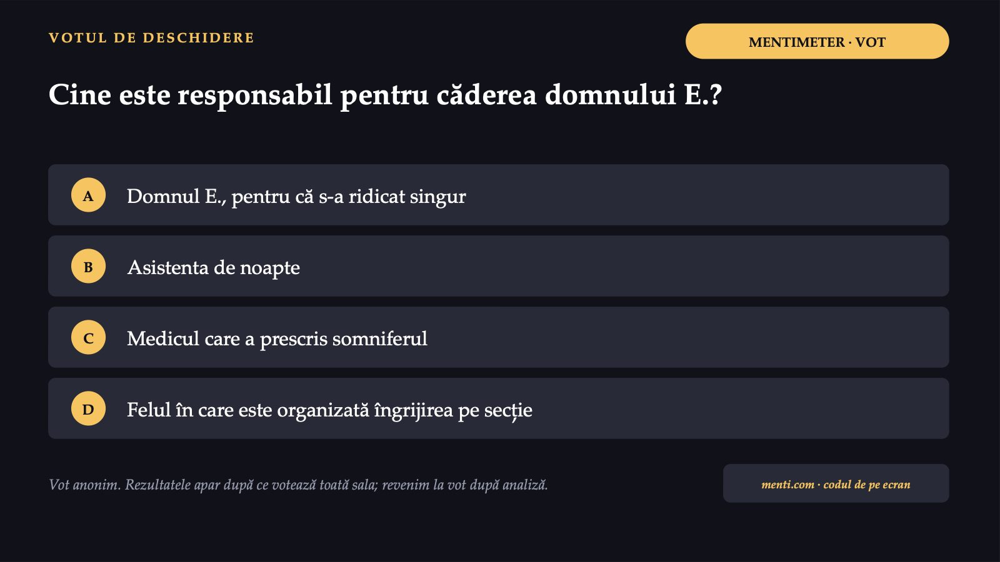
4 / 25Votați înaintea oricărei explicații. Alegeți ce credeți acum; la finalul analizei vedem dacă votul se schimbă.
Trei căi de a evalua calitatea
 5 / 25
5 / 25Avedis Donabedian a propus în 1966 trei abordări ale evaluării calității îngrijirii. O analiză din 2016 constata că ele rămân centrale, iar un raport din 2019 al Observatorului European numește clasificarea lui cadrul cel mai folosit pentru indicatorii de calitate.
Ce înseamnă fiecare nivel pe o secție
 6 / 25
6 / 25Donabedian considera rezultatele validatorii ultimi ai calității, dar avertiza că legătura dintre structură și celelalte niveluri adesea nu este bine stabilită. Un serviciu cu aparatură nouă poate avea rezultate slabe, dacă aparatura nu intră în planul pacientului.
Găsiți câte o verigă slabă de structură, de proces și de rezultat.
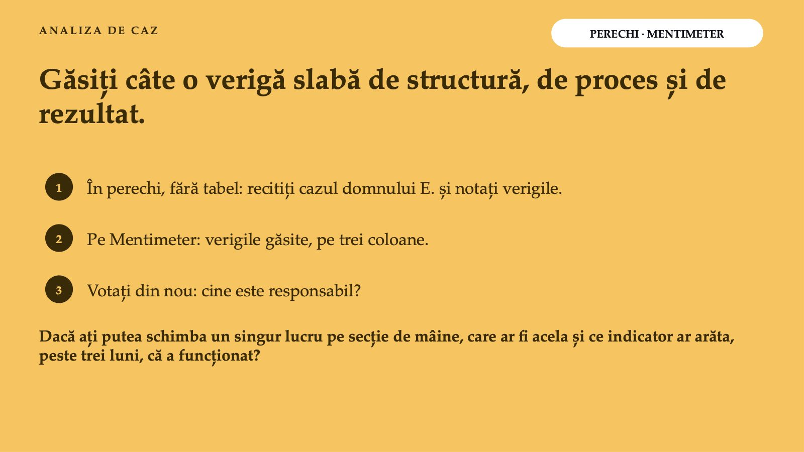
7 / 25Citiți din nou cazul și notați verigile cu colegul de bancă. Nu există o singură analiză corectă.
Căderea domnului E. pe cele trei niveluri
![O ANALIZĂ POSIBILĂ Căderea domnului E. pe cele trei niveluri Nivelul · Ce a cedat · Ce s-ar putea măsura Structură · Salon întunecat; noptieră fără frâne; o asistentă noaptea · Pacienți pe asistent noaptea Proces · Scor fără plan; cadrul și soneria departe; nicio explicație pentru noapte; somnifer nereevaluat · Pacienți cu plan individual din prima zi; paturi cu soneria la îndemână Rezultat · Contuzie; teamă de mers; ședințe scurtate; externare amânată · Căderi la 1 000 de zile de spitalizare; teama de cădere la externare Caz construit; categoriile după Donabedian (1966). O analiză posibilă, nu singura.](diapozitive/C04/008.jpg) 8 / 25
8 / 25Calculul acestor indicatori pe o lună, cu numitorul ales și capcanele lui, îl faceți la lucrarea practică a patra.
Trei dintre variante caută un singur om
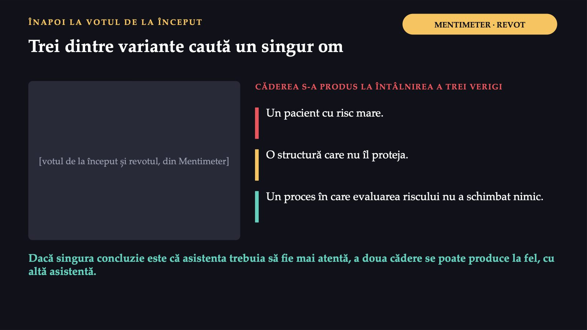
9 / 25O cădere pe secție are, probabil, mai multe cauze și arată mai multe verigi slabe ale aceluiași serviciu, nu un singur vinovat.
1 din 10
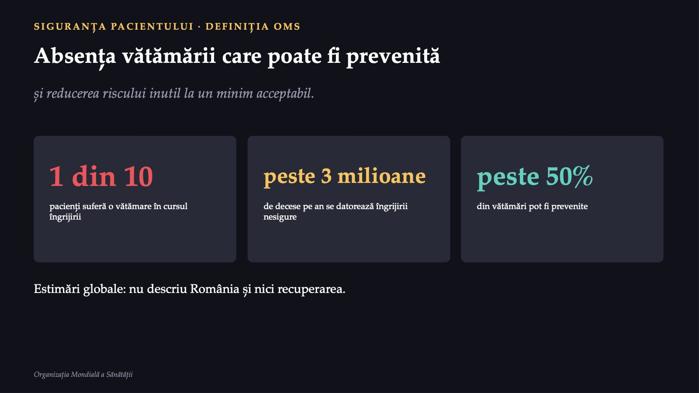
10 / 25Definiția are două părți. Prima privește vătămarea care se putea evita. A doua admite că orice îngrijire are un risc, dar cere ca riscul inutil să fie redus cât se poate.
3–5
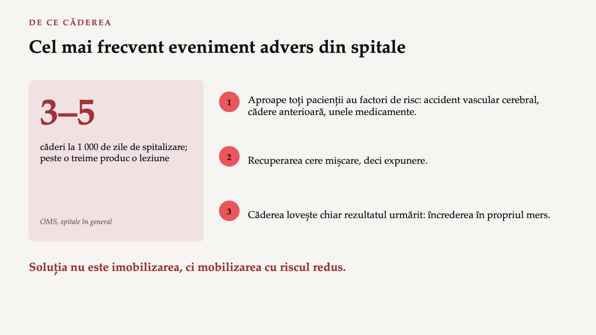
11 / 25Pacientul cu fractură de șold după o cădere are, prin definiție, o cădere anterioară. Un pacient ținut în pat ca să nu cadă nu se recuperează.
Un plan individual, nu un scor
 12 / 25
12 / 25Ghidul a fost publicat în 2022 de un grup internațional de experți. În spital, toți vârstnicii trebuie considerați cu risc mare.
Care are cel mai bun sprijin în dovezile prezentate?
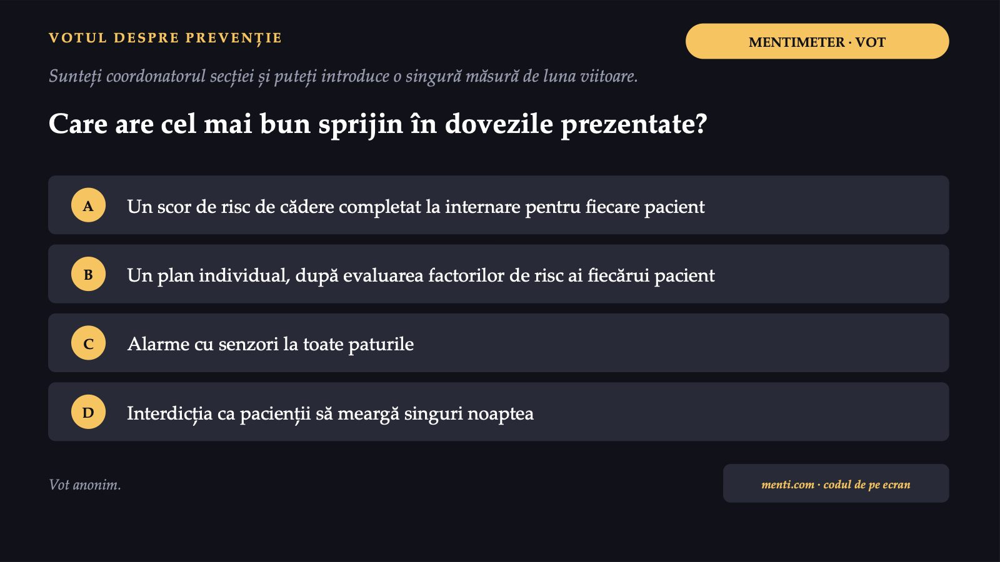
13 / 25Gândiți-vă la ce spune ghidul și la scopul recuperării.
Planul individual, pe dovezi de certitudine scăzută
![CE SPUN DOVEZILE Planul individual, pe dovezi de certitudine scăzută RAPORTUL RATELOR DE CĂDERE, INTERVENȚII MULTIFACTORIALE 1 = fără efect Spitale, 5 studii 0,80 (0,64–1,01) Recuperare (îngrijire subacută), 2 studii 0,67 Scorul singur nu reduce căderile. Alarmele cu senzori: efect incert, certitudine foarte scăzută. Interdicția de a merge singur: neevaluată separat; contrazice recuperarea. Dovezile nu permit promisiunea unui anumit procent de căderi evitate. Sinteza Cochrane, 2018; ghidul mondial pentru prevenirea căderilor, 2022](diapozitive/C04/014.jpg) 14 / 25
14 / 25Un raport al ratelor de 0,80 corespunde, ca estimare centrală, unei cincimi mai puține căderi la același număr de zile de spitalizare; intervalul de încredere de 95% include însă și lipsa efectului. În recuperare, reducerea pare mai probabilă, tot pe dovezi de certitudine scăzută.
Ce vede clinicianul și ce spune pacientul
![REZULTATELE RAPORTATE DE PACIENT Ce vede clinicianul și ce spune pacientul FIȘA FIZIOTERAPEUTULUI Se ridică singur, merge cu cadrul, urcă trei trepte cu sprijin. DOMNUL E. Îi este frică să iasă singur din casă. TERMEN NOU Rezultat raportat de pacient: un rezultat de sănătate (simptom, calitate a vieții, funcționare) relatat direct de pacient și măsurat printr-un chestionar standardizat. Generice (de exemplu, EQ-5D): comparații între afecțiuni. Specifice unei afecțiuni: mai sensibile la schimbare.](diapozitive/C04/015.jpg) 15 / 25
15 / 25Ambele informații sunt adevărate, dar a doua nu poate fi aflată decât de la pacient. Teama de a ieși din casă este un factor personal care aduce o restricție de participare, pe care niciun test de mers pe holul secției nu o arată.
Care dintre următoarele este un rezultat raportat de pacient?
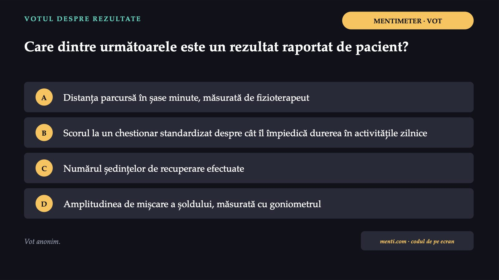
16 / 25Întrebarea care decide: de la cine vine informația?
Numai chestionarul vine direct de la pacient
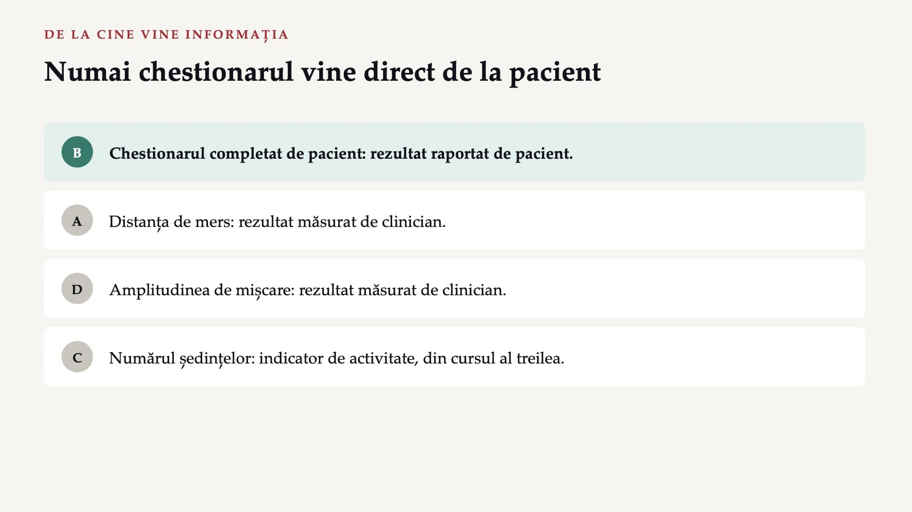
17 / 25Pentru Fișa 4, indicatorul de rezultat include un rezultat raportat de pacient; un exemplu lucrat, cu limitele lui, este la lucrarea practică a patra.
Rezultatele care contează pentru pacient, raportate la cost
 18 / 25
18 / 25Pentru domnul E., rezultatul care contează este dacă, peste trei luni, urcă singur până la etajul doi. Un program mai scump poate avea valoare mai mare, dacă rezultatele lui cresc mai mult decât costul.
Valoarea nu se reduce la o singură fracție
![PATRU SENSURI ALE VALORII · EXPERȚII COMISIEI EUROPENE Valoarea nu se reduce la o singură fracție PERSONALĂ Îngrijirea potrivită obiectivelor pacientului: domnul E., acasă și la piață. TEHNICĂ Cele mai bune rezultate cu resursele disponibile, pentru toți cei care au nevoie: programul Y. ALOCATIVĂ Resursele distribuite echitabil: pacientul din mediul rural primește aceeași recuperare? SOCIALĂ Participarea și coeziunea comunității: un vecin care iese din casă. Pot intra în conflict: alegerea numai a pacienților cu cele mai bune șanse îmbunătățește rezultatul mediu, dar, dacă pacienții mai grei nu au alt serviciu, scade valoarea alocativă.](diapozitive/C04/019.jpg) 19 / 25
19 / 25În țările cu acoperire universală, valoarea în sensul restrâns ar fi numită mai degrabă eficiență. De aceea, grupul de experți al Comisiei Europene a propus patru piloni.
Care propunere îi permite să judece valoarea în sensul restrâns?
 20 / 25
20 / 25Gândiți-vă la ambele părți ale fracției: ce se pune sus și ce se pune jos.
Numai varianta B măsoară ambele părți ale fracției
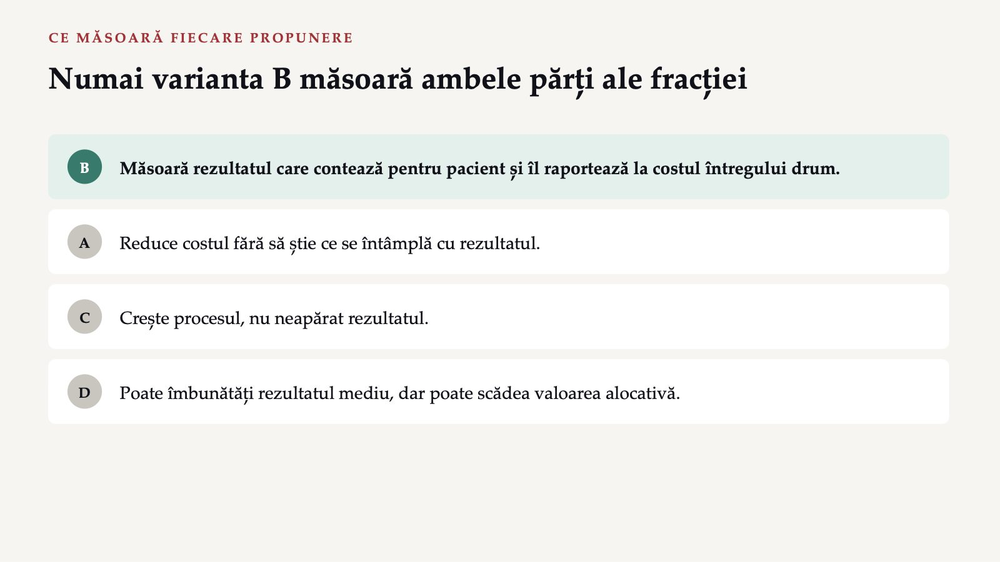
21 / 25Numărătorul fracției are nevoie de rezultatele raportate de pacient, iar numitorul, de costul întregului drum, nu doar al unei ședințe.
De la pacientul-ancoră la serviciu, în patru pași
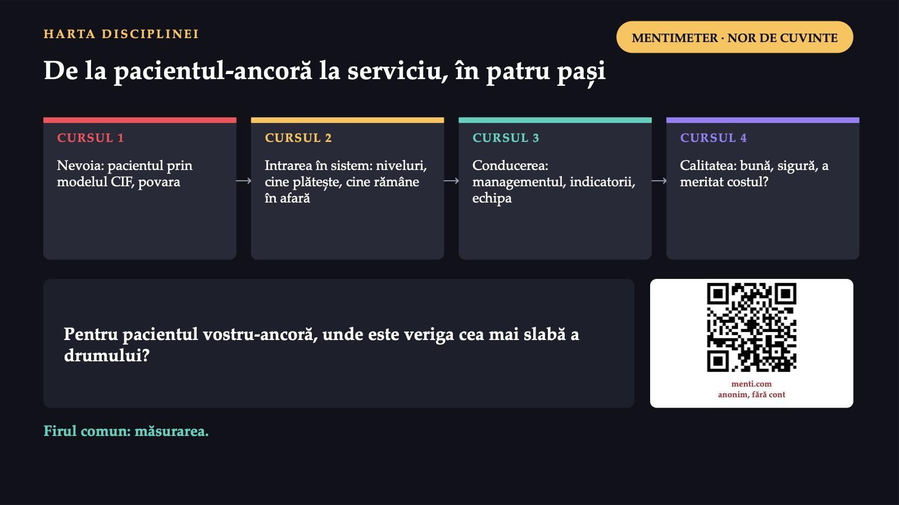
22 / 25Firul comun al celor patru cursuri este măsurarea: nevoia, accesul, activitatea și calitatea. Răspunsul vostru este punctul de plecare pentru indicatorii de la Fișa 4.
Ce faceți diferit, de luni dimineață
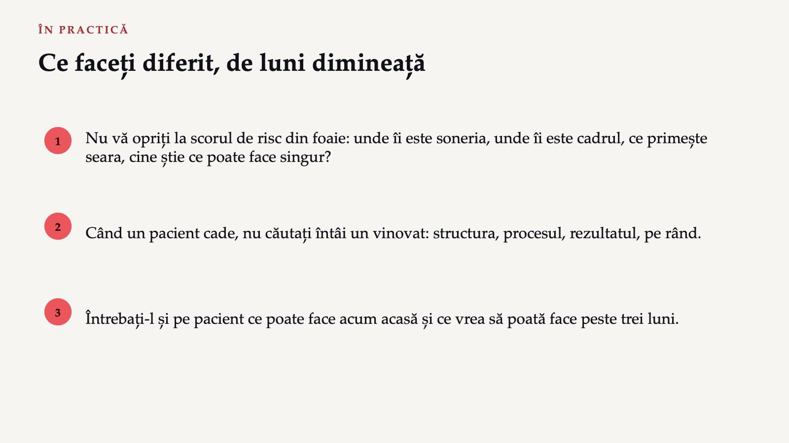
23 / 25La stagiu sau la primul loc de muncă, când preluați un pacient vârstnic pe o secție de recuperare, aceste trei întrebări vă arată unde este riscul și unde este rezultatul.
Cinci idei ale cursului
![DE REȚINUT Cinci idei ale cursului Donabedian: structura, procesul, rezultatul; legătura dintre ele adesea nu este bine stabilită. Siguranța: absența vătămării care poate fi prevenită; căderile, cele mai frecvente evenimente adverse din spitale. Prevenția: plan individual după evaluarea factorilor de risc, nu un scor; dovezi de certitudine scăzută. Rezultatele raportate de pacient: chestionare standardizate, completate de pacient. Valoarea: rezultatele care contează pentru pacient, raportate la cost; patru sensuri la nivel european.](diapozitive/C04/024.jpg) 24 / 25
24 / 25Testul grilă se susține azi, în ultimele 30 de minute ale lucrării practice a patra. Înainte, la aceeași lucrare, construiți Fișa 4: câte un indicator de calitate pentru fiecare nivel al modelului lui Donabedian.
Trei întrebări pentru titular
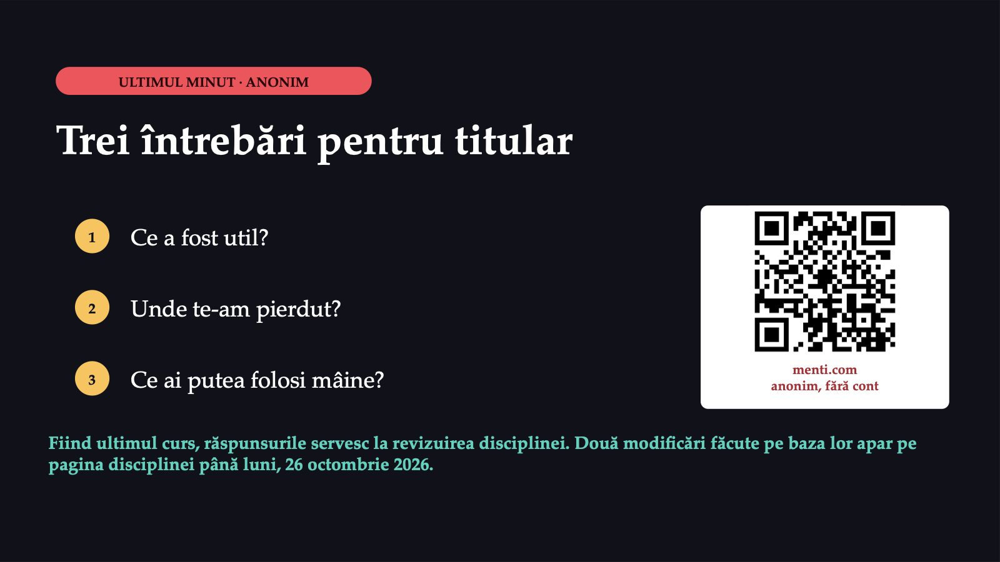
25 / 25Săgeți sau spațiu: navigare · O: vedere de ansamblu · N: notele prezentatorului · F: ecran complet · Esc: închidere